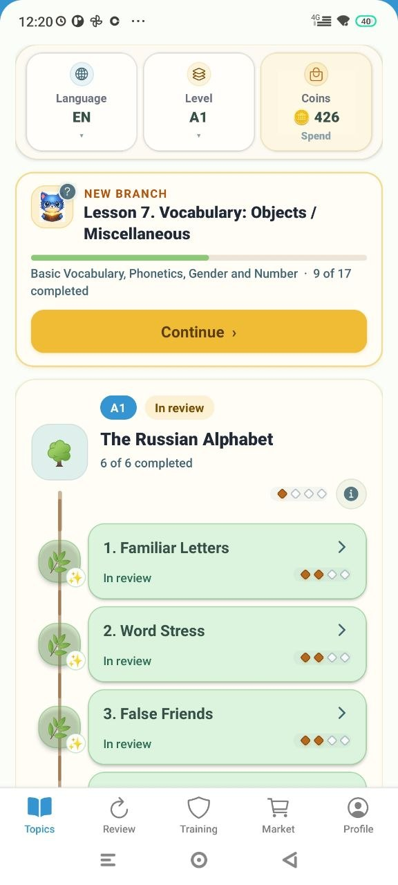
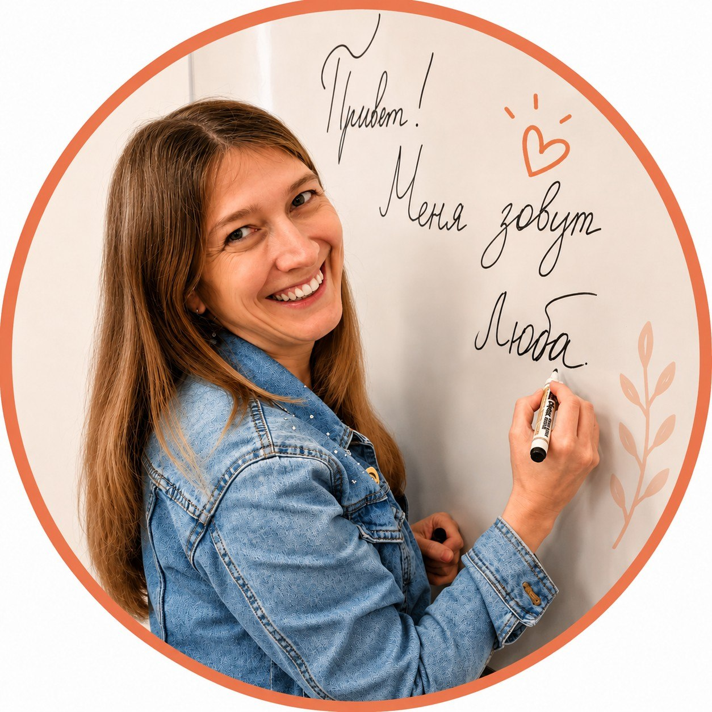

Alfabeto y primeras palabras
Familiarízate con el cirílico, escucha la pronunciación grabada y aprende palabras útiles en ruso.
Ayuda, errores e ideas: grammilla.academy@gmail.com
Grammilla reúne explicaciones, vocabulario, audio y ejercicios en una app para aprender ruso: desde las primeras letras cirílicas hasta los casos y los verbos.
Sigue las lecciones guiadas y descubre un mundo de aprendizaje inspirado en Lukomorye, la literatura y el folclore ruso.
Para iPhone, iPad y Android.

Empieza por lo básico o vuelve a un tema que quieras comprender mejor. Relaciona cada explicación con ejemplos y práctica.
Familiarízate con el cirílico, escucha la pronunciación grabada y aprende palabras útiles en ruso.
Estudia los casos rusos, los verbos y las estructuras de las frases con explicaciones y ejemplos, a tu ritmo.
Practica con cuestionarios y actividades de vocabulario, repasa los temas estudiados y sigue tu progreso.
Capturas reales de la app en iPad y Android. Abre una imagen para verla a tamaño completo.
Las capturas y la ilustración de Lukomorye muestran texto en inglés. En la app puedes elegir inglés, italiano o ruso; el aspecto puede variar según la versión.




Dos temas de Grammilla: los verbos de movimiento sin prefijos y la diferencia entre el aspecto imperfectivo y perfectivo.
идти — ходить · ехать — ездить
El ruso distingue entre desplazarse a pie y hacerlo en un medio de transporte. También importan la dirección y la frecuencia del movimiento.
A pie / en un medio de transporte
Я сейчас иду в супермаркет. А ты? (Ahora voy al supermercado a pie. ¿Y tú?)
А я сейчас еду на автобусе в центр. (Y yo ahora voy en autobús al centro.)
Идти / ехать son unidireccionales y describen, por ejemplo, un movimiento en una dirección en un momento concreto. Ходить / ездить son multidireccionales y pueden describir desplazamientos habituales o repetidos.
Los cuatro verbos son imperfectivos. La distinción de dirección es diferente del contraste entre el aspecto imperfectivo y perfectivo.
НСВ / СВ · proceso / resultado
La elección del aspecto depende del contexto y de lo que quieras expresar. Compara estos ejemplos de la lección sobre el infinitivo:
Imperfectivo — atención al proceso
Я хочу говорить по-русски. (Quiero hablar ruso.)
Perfectivo — atención al resultado
Я хочу сказать тебе правду. (Quiero decirte la verdad.)
Proceso / resultado es un punto de partida, no toda la regla. La app también aborda otros usos, como los verbos perfectivos con по- para una acción realizada durante un rato.
Ejemplos breves adaptados de las lecciones de Grammilla sobre verbos de movimiento y aspecto verbal. Continúa en la app para ver las explicaciones completas y practicar.

Russ with Love
Profesora nativa de ruso · Cocreadora de Grammilla
Conoce a una de las personas que crean Grammilla. Explora la gramática rusa, las frases cotidianas y la preparación del TORFL con Liuba: tu ruso continúa también fuera de la app.
Todos los enlaces se abren en una pestaña nueva.
Por ahora, la interfaz y las explicaciones están disponibles en inglés, italiano y ruso. El español es únicamente un idioma de esta web.
Sí. Empieza por el alfabeto ruso, la pronunciación y las primeras palabras antes de pasar a la gramática y a los temas prácticos.
Sí. Grammilla ofrece lecciones sobre verbos de movimiento sin prefijos y sobre el aspecto imperfectivo y perfectivo.
La práctica de gramática y vocabulario puede complementar tu preparación. Consulta también los requisitos del examen y otros materiales para tu nivel.
Puedes empezar como invitado. Inicia sesión si quieres sincronizar tu progreso con tu cuenta.
En los enlaces a App Store y Google Play que encontrarás en la parte superior de esta página.